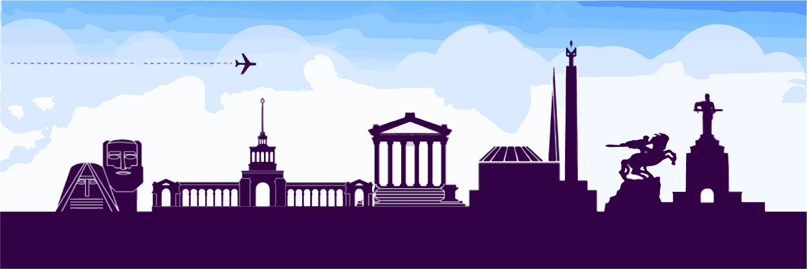
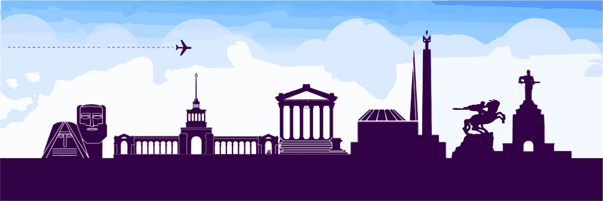
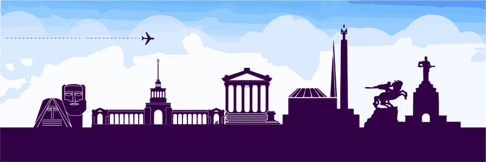
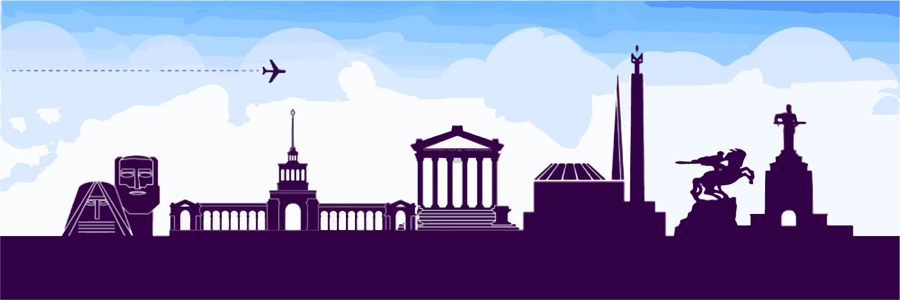

Interesante anuncio del primer ministro de Armenia Nikol Pashinyan.
Hnarguetzink: inyectar (2.58)
Haidararetzink: anunciar / declarar (3.16)
Knarguenk: examinar / analizar(3.24)
ardatrutiuner@: exportaciones(3.43)
Anradjeshtutiun: impresindible / necesario(3.48)
Anntad: sin cesar (3.54)
nrdrum: inversión (4.15)
Vradzinvadz: rearmado (4.23)
baimaner@: condiciones (4.37)
Arrumov: tomando (4.39)
Ardatrel: exportar (4.44)
Hnaravorutiun: posible (5.03)
Timenk:acudir (5.21)
ardatrutiun:producción (5.33)
Nermutzvi: importar de importación (6.02)
Part-par: palabras complejas
Desaniut: noticia (visual)
Aganchagal: auriculares
Krantzel: anotar
Arachenga: adelantarse
Hanrain: publico
Ashjadavartz: sueldo
Gank: parada
Antratarnal: referirnos / darse cuenta
Grgui: devuelta
Jore: pensar
Mangal : pasear / deambular
Kam: clavo
Vorosh: distintos
Nstil: vivir
Djanchvor: conocido
Hartzadzruitz: entrevista
Voronel: buscar
Voronich: buscador
Mskhel: perder el tiempo / to waist
Grguin: noren
Ughakrutiun: ortografia
Tzank: lista
Shtapel: apurarse
Dndesutiun: economia
Tragan:positivo
Djghtagan: negativo
Guitz: junto/compartir
Baimanakir: documento / trato / contrato
Antznagan arrumov (sentido personal)
Hanrapadjin: departamento
Tzantz: red
Hamatzantz: internet
Magh: filtro
Guensakrutiun: biografía
Sark: equipo
Heraga: a distancia
Shardjun: movido
Djoj: enriquecer (un vocabulario por ejemplo)
Havanapar: probablemente
Bashar: stock
Parabashar: vocabulario
Dzerakravorum: programacion
Parelavel : mejorar / perfeccionar
Perr : cara
Antzam : personalmente
Tzevavorel : diseñar
Dzedeghel: separar / individualizar
Spukel : confirmar / asegurarse
Tera: defecto